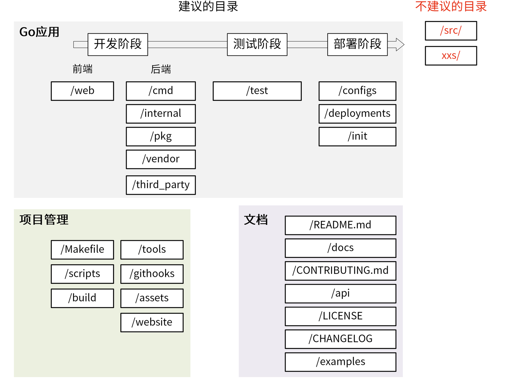

如何规范go项目目录
1 如何规范目录
- 命名清晰: 目录名不要太长，不要太短,清晰，简介,清晰表达该目录实现的功能，目录名采用单数。
- 功能明确: 当需要新增一个功能时，我们能够非常清楚地知道把这个功能放在哪个目录下。
- 全面性：目录结构尽可能包含研发过程中需要的功能，例如，文档，脚本，源码管理、API 实现、工具、第三方包、测试、编译产物。
- 可预测性: 项目规模。
- 可扩展性。每个目录下存放了同类的功能，在项目变大时，这些目录应该可以存放更多同类功能。
internal 目录用来实现内部代码，app 和 pkg 目录下的所有文件都属于内部代码。如果 internal 目录不管项目大小，永远只有 2 个文件 app 和 pkg，那么就说明 internal 目录是不可扩展的。相反，如果 internal 目录下直接存放每个组件的源码目录（一个项目可以由一个或多个组件组成），当项目变大、组件增多时，可以将新增加的组件代码存放到 internal 目录，这时 internal 目录就是可扩展的。例如：
$ ls internal/
apiserver authzserver iamctl pkg pump watcher
下面来看2个具体的、可以作为目录规范的目录结构
2 平铺式目录结构
一个 Go 项目可以是一个应用，也可以是一个代码框架 / 库，当项目是代码框架 / 库时，比较适合采用平铺式目录结构。
平铺方式就是在项目的根目录下存放项目的代码，整个目录结构看起来更像是一层的，这种方式在很多框架 / 库中存在，使用这种方式的好处是引用路径长度明显减少。
$ ls glog/
glog_file.go glog.go glog_test.go LICENSE README
3 结构化目录结构
├── api
│ ├── openapi
│ └── swagger
├── build
│ ├── ci
│ ├── docker
│ │ ├── iam-apiserver
│ │ ├── iam-authz-server
│ │ └── iam-pump
│ ├── package
├── CHANGELOG
├── cmd
│ ├── iam-apiserver
│ │ └── apiserver.go
│ ├── iam-authz-server
│ │ └── authzserver.go
│ ├── iamctl
│ │ └── iamctl.go
│ └── iam-pump
│ └── pump.go
├── configs
├── CONTRIBUTING.md
├── deployments
├── docs
│ ├── devel
│ │ ├── en-US
│ │ └── zh-CN
│ ├── guide
│ │ ├── en-US
│ │ └── zh-CN
│ ├── images
│ └── README.md
├── examples
├── githooks
├── go.mod
├── go.sum
├── init
├── internal
│ ├── apiserver
│ │ ├── api
│ │ │ └── v1
│ │ │ └── user
│ │ ├── apiserver.go
│ │ ├── options
│ │ ├── service
│ │ ├── store
│ │ │ ├── mysql
│ │ │ ├── fake
│ │ └── testing
│ ├── authzserver
│ │ ├── api
│ │ │ └── v1
│ │ │ └── authorize
│ │ ├── options
│ │ ├── store
│ │ └── testing
│ ├── iamctl
│ │ ├── cmd
│ │ │ ├── completion
│ │ │ ├── user
│ │ └── util
│ ├── pkg
│ │ ├── code
│ │ ├── options
│ │ ├── server
│ │ ├── util
│ │ └── validation
├── LICENSE
├── Makefile
├── _output
│ ├── platforms
│ │ └── linux
│ │ └── amd64
├── pkg
│ ├── util
│ │ └── genutil
├── README.md
├── scripts
│ ├── lib
│ ├── make-rules
├── test
│ ├── testdata
├── third_party
│ └── forked
└── tools
一个 Go 项目包含 3 大部分，Go 应用 、项目管理和文档。

4 go 应用
4.1 go 应用存放前后端代码
1 /web
前端，存放 Web 静态资源，服务端模板和单页应用（SPAs)。
2 /cmd
一个项目有很多组件,可以把组件 main 函数所在的文件夹统一存放在 /cmd 下，例如:
$ ls cmd/
gendocs geniamdocs genman genswaggertypedocs genyaml iam-apiserver iam-authz-server iamctl iam-pump
$ ls cmd/iam-apiserver/
apiserver.go
/cmd/<组件名> 下不要存放太多的代码。
3 /internal
存放私有应用和库代码。
/internal/apiserver：该目录中存放真实的应用代码。这些应用的共享代码存放在/internal/pkg 目录下。/internal/pkg：存放项目内可共享，项目外不共享的包。这些包提供了比较基础、通用的功能，例如工具、错误码、用户验证等功能。
一个示例如下:
├── apiserver
│ ├── api
│ │ └── v1
│ │ └── user
│ ├── options
│ ├── config
│ ├── service
│ │ └── user.go
│ ├── store
│ │ ├── mysql
│ │ │ └── user.go
│ │ ├── fake
│ └── testing
├── authzserver
│ ├── api
│ │ └── v1
│ ├── options
│ ├── store
│ └── testing
├── iamctl
│ ├── cmd
│ │ ├── cmd.go
│ │ ├── info
└── pkg
├── code
├── middleware
├── options
└── validation
/internal 目录大概分为 3 类子目录
- /internal/pkg: 内部共享包存放的目录。
- /internal/authzserver、/internal/apiserver、/internal/pump、/internal/iamctl：应用目录，里面包含应用程序的实现代码
- /internal/iamctl：对于一些大型项目，可能还会需要一个客户端工具。
每个应用内部目录结构根据功能划分如下：
/internal/apiserver/api/v1: HTTP API 接口的具体实现，主要用来做 HTTP 请求的解包、参数校验、业务逻辑处理、返回。注意这里的业务逻辑处理应该是轻量级的，如果业务逻辑比较复杂，代码量比较多，建议放到 /internal/apiserver/service 目录下。该源码文件主要用来串流程。- /internal/apiserver/options：应用的 command flag。
- /internal/apiserver/service：应用复杂业务处理代码。
- /internal/apiserver/store/mysql：一个应用可能要持久化的存储一些数据。
- /internal/pkg: 项目内部可以共享的包。
- /internal/pkg/code：项目业务 Code 码。
- /internal/pkg/validation：一些通用的验证函数。
- /internal/pkg/middleware：HTTP 处理链。
4 /pkg
该目录中存放可以被外部应用使用的代码库。
5 /vendor
项目依赖，可通过 go mod vendor 创建。需要注意的是，如果是一个 Go 库，不要提交 vendor 依赖包。
6 /third_party
外部帮助工具，分支代码或其他第三方应用，比如我们 fork 了一个第三方 go 包，并做了一些小的改动，我们可以放在目录 /third_party/forked 下。一方面可以很清楚的知道该包是 fork 第三方的，另一方面又能够方便地和 upstream 同步。
4.2 Go 应用：主要存放测试相关的文件和代码
7 /test
存放其他外部测试应用和测试数据。
4.3 Go 应用：存放跟应用部署相关的文件
8 /configs
配置文件模板或默认配置。可以在这里存放 confd 或 consul-template 模板文件。有一点要注意，配置中不能携带敏感信息，这些敏感信息，我们可以用占位符来替代，例如
apiVersion: v1
user:
username: ${CONFIG_USER_USERNAME} # iam 用户名
password: ${CONFIG_USER_PASSWORD} # iam 密码
9 /deployments
用来存放 Iaas、PaaS 系统和容器编排部署配置和模板（Docker-Compose，Kubernetes/Helm，Mesos，Terraform，Bosh）。 当前软件部署基本都在朝着容器化的部署方式去演进，所以这类跟 Kubernetes 相关的目录放到目录结构中。
10 /init
存放初始化系统（systemd，upstart，sysv）和进程管理配置文件。比如 sysemd 的 unit 文件。这类文件，在非容器化部署的项目中会用到。
5 项目管理
5.1 项目管理：存放用来管理 Go 项目的各类文件
11 /Makefile
一个 Go 项目在其根目录下应该有一个 Makefile 工具，用来对项目进行管理，Makefile 通常用来执行静态代码检查、单元测试、编译等功能。
直接执行 make 时，执行如下各项 format -> lint -> test -> build，如果是有代码生成的操作，还可能需要首先生成代码 gen -> format -> lint -> test -> build。
实际开发中，我们可以将一些重复性的工作自动化，并添加到 Makefile 文件中统一管理。
12 /scripts
存放脚本文件，实现构建、安装、分析等不同功能,不同项目，里面可能存放不同的文件,通常可以考虑包含以下 3 个目录：
/scripts/make-rules：用来存放 makefile 文件，实现 /Makefile 文件中的各个功能。Makefile 有很多功能，为了保持它的简洁，我建议你将各个功能的具体实现放在/scripts/make-rules 文件夹下。/scripts/lib：shell 库，用来存放 shell 脚本。一个大型项目中有很多自动化任务，比如发布、更新文档、生成代码等，所以要写很多 shell 脚本，这些 shell 脚本会有一些通用功能，可以抽象成库，存放在/scripts/lib 目录下，比如 logging.sh，util.sh 等。/scripts/install：如果项目支持自动化部署，可以将自动化部署脚本放在此目录下。如果部署脚本简单，也可以直接放在 /scripts 目录下。
shell 脚本中的函数名，建议采用语义化的命名方式，例如 iam::log::info 这种语义化的命名方式，可以使调用者轻松的辨别出函数的功能类别，便于函数的管理和引用。
在 Kubernetes 的脚本中，就大量采用了这种命名方式。
13 /build
存放安装包和持续集成相关的文件。
- /build/package：存放容器（Docker）、系统（deb, rpm, pkg）的包配置和脚本。
- /build/ci：存放 CI（travis，circle，drone）的配置文件和脚本。
- /build/docker：存放子项目各个组件的 Dockerfile 文件。
14 /tools
存放这个项目的支持工具。这些工具可导入来自 /pkg 和 /internal 目录的代码。
15 /githooks
Git 钩子。比如，我们可以将 commit-msg 存放在该目录。
16 /assets
项目使用的其他资源 (图片、CSS、JavaScript 等)。
17 /website
如果你不使用 GitHub 页面，那么可以在这里放置项目网站相关的数据。
6 文档
18 /README.md
一般包含了项目的介绍、功能、快速安装和使用指引、详细的文档链接以及开发指引等。
有时候 README 文档会比较长，为了能够快速定位到所需内容，需要添加 markdown toc 索引，可以借助工具 tocenize 来完成索引的添加
我们也介绍过 README 是可以规范化的，所以这个 README 文档，可以通过脚本或工具来自动生成。
19 /docs
存放设计文档、开发文档和用户文档等。
/docs/devel/{en-US,zh-CN}：存放开发文档、hack 文档等。/docs/guide/{en-US,zh-CN}: 存放用户手册，安装、quickstart、产品文档等，分为中文文档和英文文档。/docs/images：存放图片文件。
20 /CONTRIBUTING.md
是一个开源就绪的项目，最好还要有一个 CONTRIBUTING.md 文件，用来说明如何贡献代码，如何开源协同。CONTRIBUTING.md 不仅能够规范协同流程，还能降低第三方开发者贡献代码的难度
21 /api
/api 目录中存放的是当前项目对外提供的各种不同类型的 API 接口定义文件。其中可能包含类似 /api/protobuf-spec、/api/thrift-spec、/api/http-spec、openapi、swagger 的目录，这些目录包含了当前项目对外提供和依赖的所有 API 文件
如下是 IAM 项目的 /api 目录：
├── openapi/
│ └── README.md
└── swagger/
├── docs/
├── README.md
└── swagger.yaml
二级目录的主要作用，就是在一个项目同时提供了多种不同的访问方式时，可以分类存放。用这种方式可以避免潜在的冲突，也能让项目结构更加清晰
22 /LICENSE
版权文件可以是私有的，也可以是开源的。常用的开源协议有：Apache 2.0、MIT、BSD、GPL、Mozilla、LGPL。有时候，公有云产品为了打造品牌影响力，会对外发布一个本产品的开源版本，所以在项目规划初期最好就能规划下未来产品的走向，选择合适的 LICENSE。
为了声明版权，你可能会需要将 LICENSE 头添加到源码文件或者其他文件中，这部分工作可以通过工具实现自动化，推荐工具： addlicense 。
当代码中引用了其它开源代码时，需要在 LICENSE 中说明对其它源码的引用，这就需要知道代码引用了哪些源码，以及这些源码的开源协议，可以借助工具来进行检查，推荐工具： glice 。
至于如何说明对其它源码的引用，大家可以参考下 IAM 项目的 LICENSE 文件。
23 /CHANGELOG
为了方便了解当前版本的更新内容或者历史更新内容，需要将更新记录存放到 CHANGELOG 目录。
编写 CHANGELOG 是一个复杂、繁琐的工作，我们可以结合 Angular 规范 和 git-chglog 来自动生成 CHANGELOG。
24 /examples
存放应用程序或者公共包的示例代码。这些示例代码可以降低使用者的上手门槛。
7 不建议的目录
1 /src/
一些开发语言，例如 Java 项目中会有 src 目录。在 Java 项目中， src 目录是一种常见的模式，但在 Go 项目中，不建议使用 src 目录 在默认情况下，Go 语言的项目都会被放置到$GOPATH/src 目录下。这个目录中存放着所有代码，如果我们在自己的项目中使用/src 目录，这个包的导入路径中就会出现两个 src，例如
$GOPATH/src/github.com/marmotedu/project/src/main.go
这样的目录结构看起来非常怪。
1 xxs/
在 Go 项目中，要避免使用带复数的目录或者包。建议统一使用单
8 一些建议
对于小型项目，可以考虑先包含 cmd、pkg、internal 3 个目录，其他目录后面按需创建
$ tree --noreport -L 2 tms
tms
├── cmd
├── internal
├── pkg
└── README.md
另外，在设计目录结构时，一些空目录无法提交到 Git 仓库中，但我们又想将这个空目录上传到 Git 仓库中，以保留目录结构。这时候，可以在空目录下加一个 .keep 文件，例如：
$ ls -A build/ci/
.keep